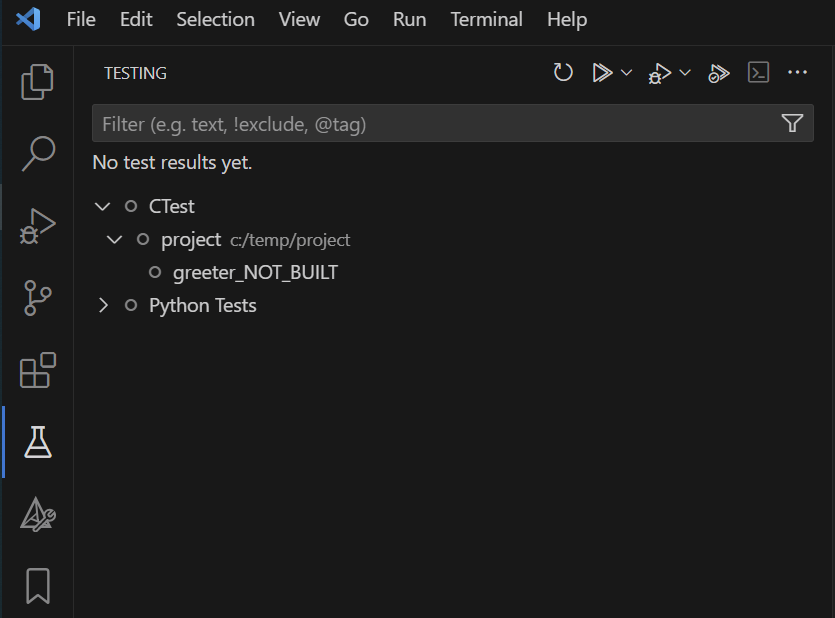

Posts in learning
Making Unit Tests Visible in Visual Studio Code with CTest and GoogleTest
- 05 February 2025
Many C/C++ projects rely on CMake, GoogleTest (GTest), and GoogleMock (GMock) for unit testing. Sometimes developers want to see and run/debug these tests directly in their IDE.
In this blog post, I will show how to make the unit tests visible in Visual Studio Code (VS Code) using CTest and GoogleTest. I will start by explaining the standard way to build and run the tests with CMake. Then we will see how CTest can help us discover the tests and how to display them in the VS Code interface.
Allocate Code and Data to Specific Memory Sections
- 07 January 2025
There was a question in our support channel about the memory sections from an external library.
The colleague was trying to understand how the different sections were defined for the library and how they were placed in memory.
When checking the linker configuration file (*.lsl) the observation was that the memory sections for:
all the objects for our code, the section pattern was .<type>.<filename>.<symbol>. For example, select .text.component.main or select .data.component.my_var.